Learned by Heart › Library
The library
50 novels, each written for a different kind of reader and each teaching one real subject through the story. Chapter one of every book is free to read here, no sign-up. Browse by subject:
Novels that teach money
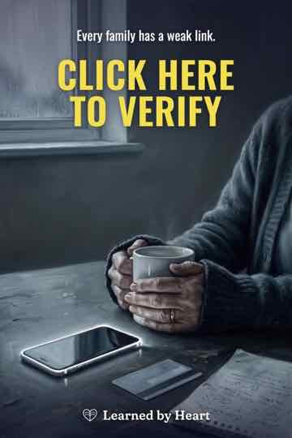
Click Here to VerifyA domestic thriller for readers of Freida McFaddenteaches scams and fraudEvery family has a weak link.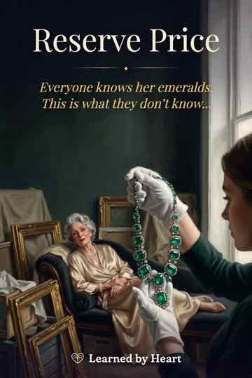
Reserve PriceA film-star saga for readers of Taylor Jenkins Reidteaches money across a lifetimeEveryone knows her emeralds. This is what they don’t know...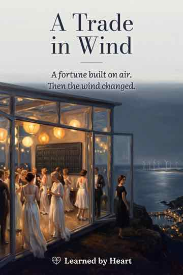
A Trade in WindA Jazz Age novel for readers of F. Scott Fitzgeraldteaches bubbles and crashesA fortune built on air. Then the wind changed.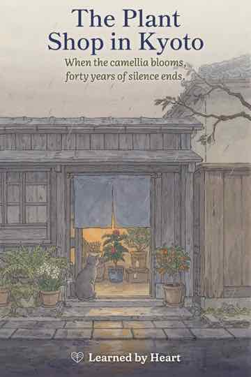
The Plant Shop in KyotoA gentle, cosy novel for readers of Toshikazu Kawaguchiteaches running a small businessWhen the camellia blooms, forty years of silence ends.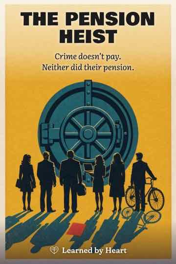
The Pension HeistA caper comedy for readers of Janet Evanovichteaches pensions and retirement savingCrime doesn’t pay. Neither did their pension.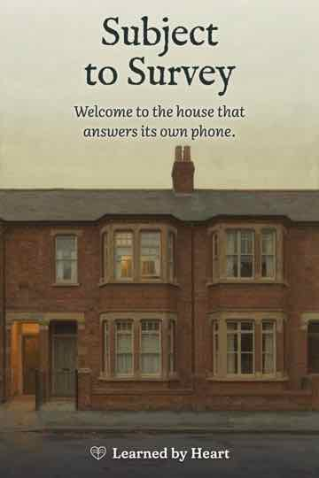
Subject to SurveyA haunted-house gothic for readers of Shirley Jackson and T. Kingfisherteaches buying a homeWelcome to the house that answers its own phone.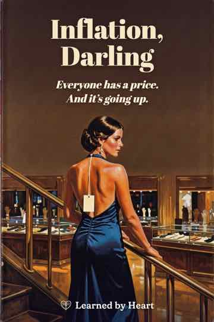
Inflation, DarlingA glossy 1970s saga for readers of Jilly Cooper and Penny Vincenziteaches inflation and how economies workEveryone has a price. And it’s going up.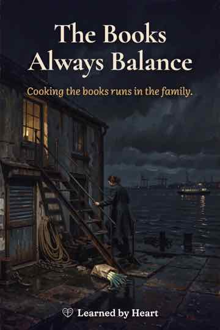
The Books Always BalanceA crime family saga for readers of Mario Puzoteaches accountingCooking the books runs in the family.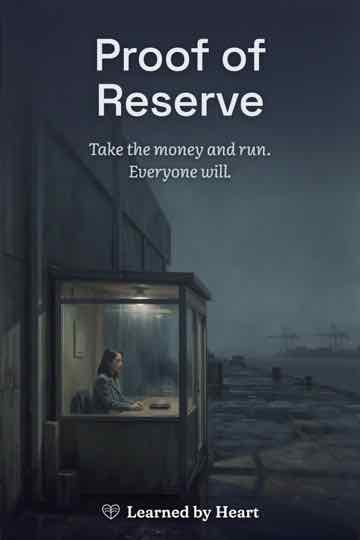
Proof of ReserveA near-future thriller for readers of William Gibson and Black Mirrorteaches what money is, from banks to cryptoTake the money and run. Everyone will.
Novels that teach science
 Oxygen, MostlyA funny science survival story for readers of Andy Weirteaches how the body worksSeven people. Half the air. It’s all her fault.
Oxygen, MostlyA funny science survival story for readers of Andy Weirteaches how the body worksSeven people. Half the air. It’s all her fault.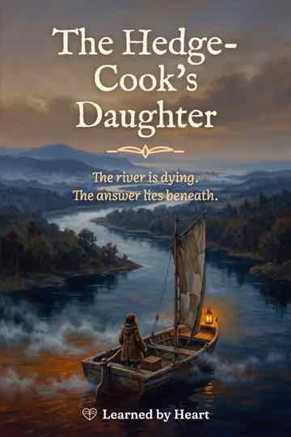
The Hedge-Cook's DaughterA storybook fantasy for readers of J.K. Rowling and J.R.R. Tolkienteaches everyday chemistryThe river is dying. The answer lies beneath.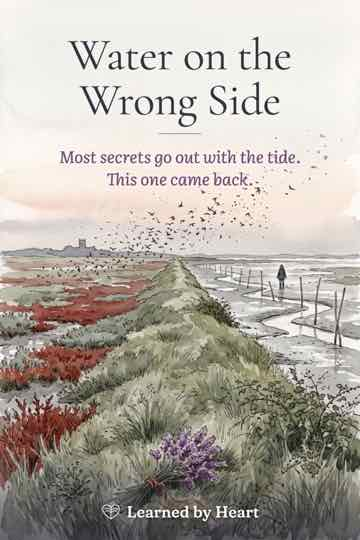
Water on the Wrong SideA marshland mystery for readers of Delia Owensteaches wetlands, weather and climateMost secrets go out with the tide. This one came back. PlanktonA quiet love story for readers of Sally Rooney and Claire Keeganteaches climate scienceThe sea is warming. Their silence isn’t.
PlanktonA quiet love story for readers of Sally Rooney and Claire Keeganteaches climate scienceThe sea is warming. Their silence isn’t. Mitochondria, My LoveA lab romantic comedy for readers of Ali Hazelwoodteaches cell biologyShe studies biology. Together, they have chemistry.
Mitochondria, My LoveA lab romantic comedy for readers of Ali Hazelwoodteaches cell biologyShe studies biology. Together, they have chemistry. A Brief Affair with the StarsA sweeping love story for readers of Jojo Moyesteaches astronomy and spaceSome things you can only see in the dark.
A Brief Affair with the StarsA sweeping love story for readers of Jojo Moyesteaches astronomy and spaceSome things you can only see in the dark.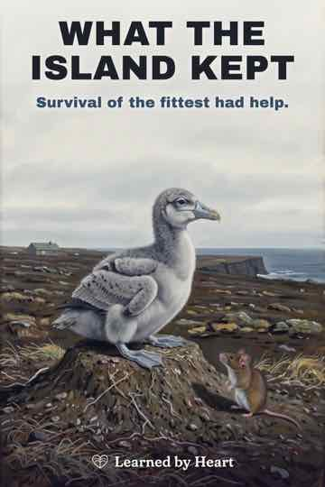
What the Island KeptA science thriller for readers of Michael Crichtonteaches genetics and evolutionSurvival of the fittest had help.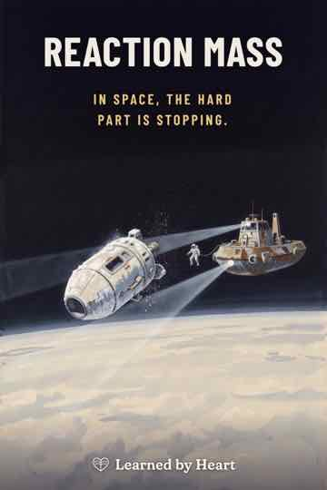
Reaction MassA space opera for readers of James S.A. Coreyteaches everyday physicsIn space, the hard part is stopping. The Cold StoreA Nordic noir for readers of Jo Nesbø and Ann Cleevesteaches forensic scienceDead men tell no tales. His fingers did.
The Cold StoreA Nordic noir for readers of Jo Nesbø and Ann Cleevesteaches forensic scienceDead men tell no tales. His fingers did.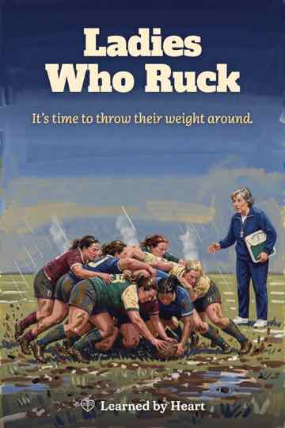
Ladies Who RuckA sports comedy for readers of Ted Lasso and Nick Hornbyteaches how muscles grow and what food doesIt’s time to throw their weight around.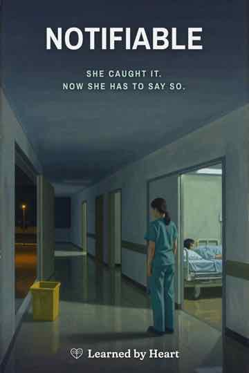
NotifiableA hospital drama for readers of Adam Kay and Grey's Anatomyteaches the immune systemShe caught it. Now she has to say so.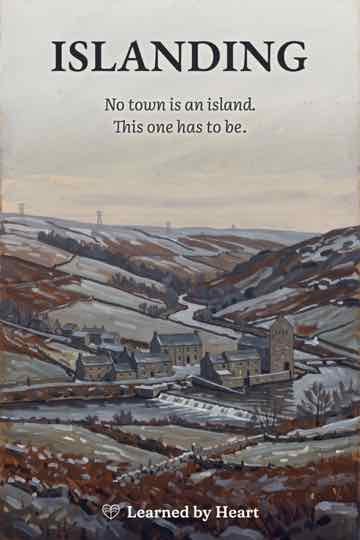
IslandingA literary novel after the blackout for readers of Emily St. John Mandelteaches electricity and energyNo town is an island. This one has to be.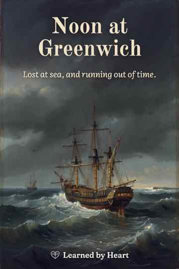
Noon at GreenwichAn age-of-sail adventure for readers of Patrick O'Brianteaches navigation and how the oceans moveLost at sea, and running out of time. Where the Silver LiesA Western for readers of Larry McMurtry and Charles Portisteaches geologyThe ground never lies. Everyone standing on it does.
Where the Silver LiesA Western for readers of Larry McMurtry and Charles Portisteaches geologyThe ground never lies. Everyone standing on it does. Show Your WorkingAn epic fantasy for readers of Brandon Sandersonteaches maths: ratio, algebra, geometry and proofClose enough is how dams break.
Show Your WorkingAn epic fantasy for readers of Brandon Sandersonteaches maths: ratio, algebra, geometry and proofClose enough is how dams break.
Novels that teach history
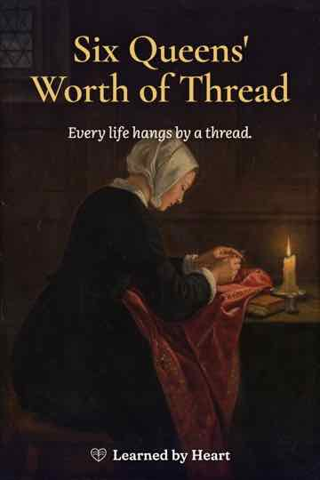
Six Queens' Worth of ThreadA Tudor court drama for readers of Philippa Gregoryteaches the TudorsEvery life hangs by a thread.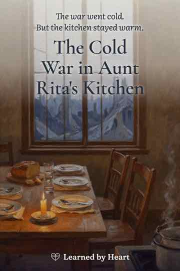
The Cold War in Aunt Rita's KitchenA family saga for readers of Kristin Hannahteaches the Cold War, start to finishThe war went cold. But the kitchen stayed warm. The Drawing OfficeA wartime novel for readers of Kate Quinnteaches the Second World War, start to finishDraw the line. Then cross it.
The Drawing OfficeA wartime novel for readers of Kate Quinnteaches the Second World War, start to finishDraw the line. Then cross it. The Last Honest SenatorA Roman political thriller for readers of Robert Harristeaches the fall of the Roman RepublicHe knows every name in Rome. Soon, they will know his.
The Last Honest SenatorA Roman political thriller for readers of Robert Harristeaches the fall of the Roman RepublicHe knows every name in Rome. Soon, they will know his. The Snake King's DaughterA Greek myth retelling for readers of Madeline Miller and Jennifer Saintteaches the ancient Greek worldEvery vote counts. Hers cost everything.
The Snake King's DaughterA Greek myth retelling for readers of Madeline Miller and Jennifer Saintteaches the ancient Greek worldEvery vote counts. Hers cost everything.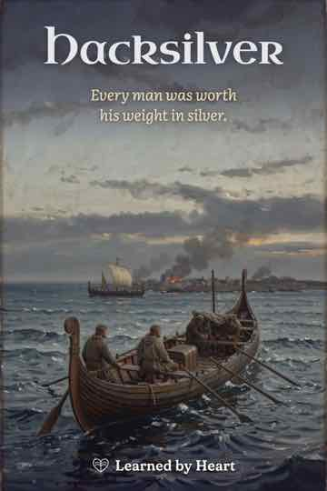
HacksilverA Viking saga for readers of Bernard Cornwellteaches the Viking ageEvery man was worth his weight in silver.
Novels that teach how people think
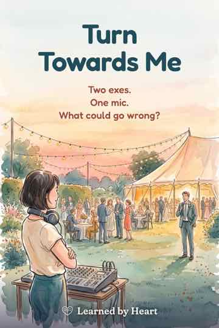
Turn Towards MeA romantic comedy for readers of Emily Henryteaches the science of relationshipsTwo exes. One mic. What could go wrong?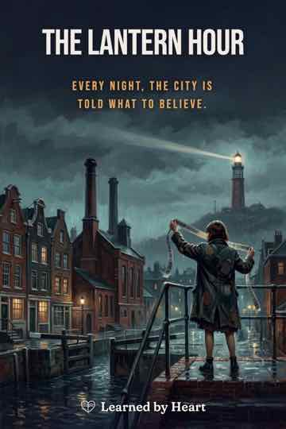
The Lantern HourA dystopian adventure for readers of Suzanne Collinsteaches propaganda and misinformationEvery night, the city is told what to believe.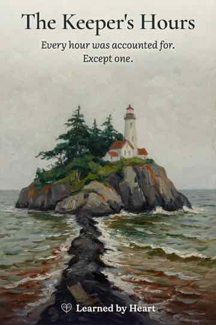
The Keeper's HoursA quiet literary novel for readers of Kazuo Ishiguroteaches Stoic philosophy for everyday lifeEvery hour was accounted for. Except one.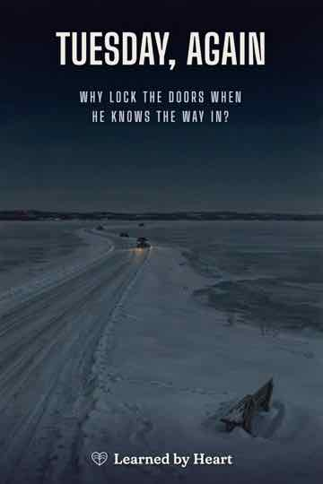
Tuesday, AgainA time-loop thriller for readers of Blake Crouchteaches habits and memoryWhy lock the doors when he knows the way in?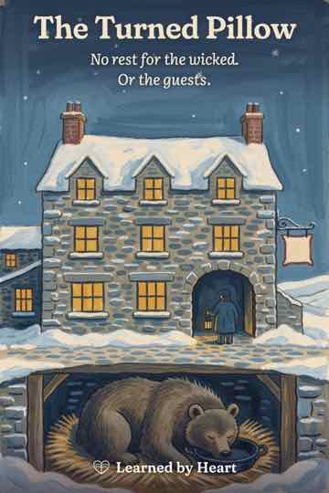
The Turned PillowA cosy fantasy for readers of Travis Baldreeteaches sleepNo rest for the wicked. Or the guests.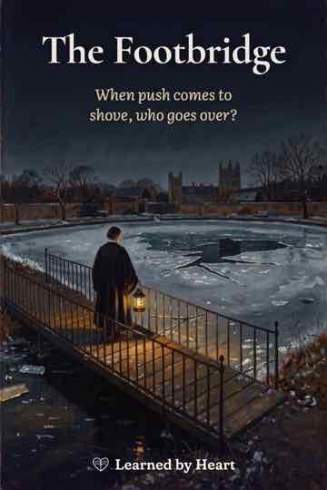
The FootbridgeA dark academia novel for readers of Donna Tartt and M.L. Rioteaches moral philosophyWhen push comes to shove, who goes over?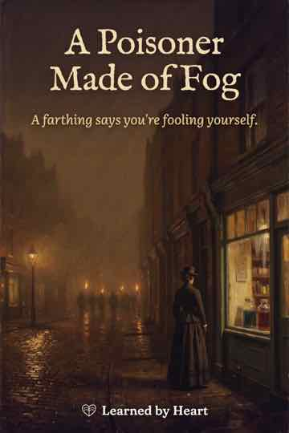
A Poisoner Made of FogA Victorian mystery for readers of Arthur Conan Doyleteaches cognitive biases and clear thinkingA farthing says you're fooling yourself.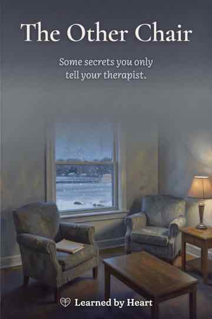
The Other ChairA psychological thriller for readers of Alex Michaelides and Liane Moriartyteaches how the mind works and what therapy doesSome secrets you only tell your therapist.
Novels that teach numbers and computers
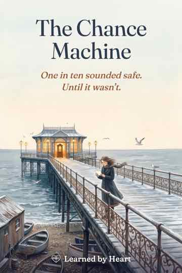
The Chance MachineA gentle what-if story for readers of Matt Haigteaches probability and decisionsOne in ten sounded safe. Until it wasn’t.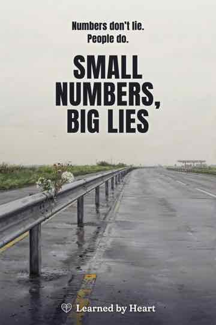
Small Numbers, Big LiesA suburban thriller for readers of Harlan Cobenteaches statistics and how numbers misleadNumbers don’t lie. People do.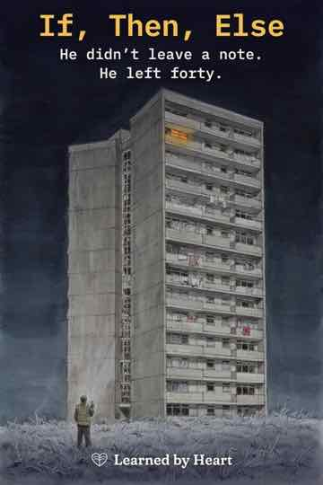
If, Then, ElseA puzzle mystery for readers of Janice Hallett and Stuart Turtonteaches how computers thinkHe didn’t leave a note. He left forty.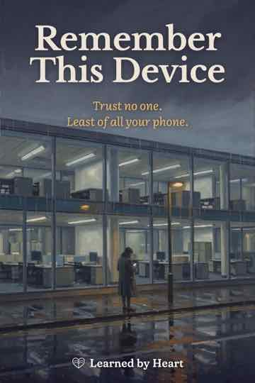
Remember This DeviceA spy thriller for readers of John le Carré and Mick Herronteaches digital privacy and securityTrust no one. Least of all your phone.
Novels that teach life skills
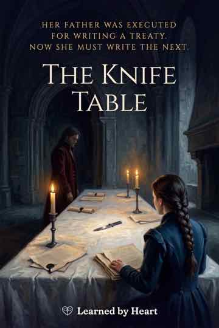
The Knife TableA romantasy for readers of Sarah J. Maas and Rebecca Yarrosteaches negotiationHer father was executed for writing a treaty. Now she must write the next.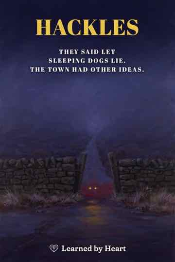
HacklesA small-town horror for readers of Stephen Kingteaches dog behaviour and trainingThey said let sleeping dogs lie. The town had other ideas.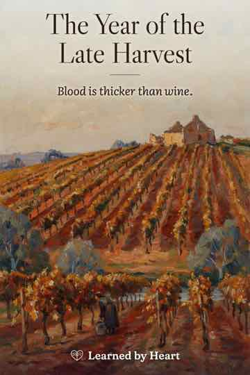
The Year of the Late HarvestA vineyard family saga for readers of Liane Moriartyteaches wineBlood is thicker than wine. Piano, PianoA summer romance for readers of Beth O’Leary and Jenny Colganteaches beginner ItalianLost in translation. Found in Italy.
Piano, PianoA summer romance for readers of Beth O’Leary and Jenny Colganteaches beginner ItalianLost in translation. Found in Italy.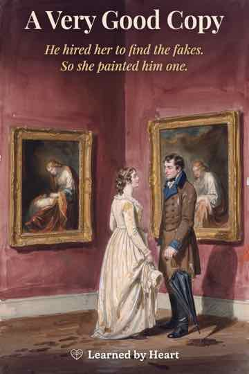
A Very Good CopyA Regency romance for readers of Julia Quinn and Tessa Dareteaches how to look at a paintingHe hired her to find the fakes. So she painted him one.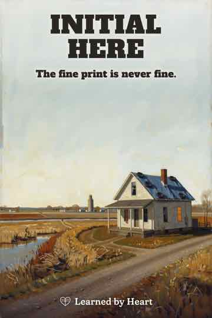
Initial HereA legal thriller for readers of John Grishamteaches how the law works for ordinary peopleThe fine print is never fine.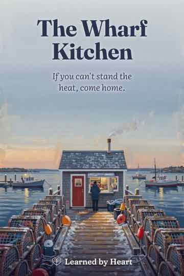
The Wharf KitchenA small-town romance for readers of Sarah Morgan and Jenny Colganteaches how to cookIf you can't stand the heat, come home.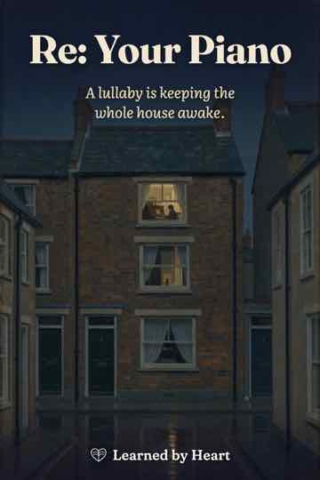
Re: Your PianoA novel in letters for readers of 84 Charing Cross Road and The Guernsey Literary and Potato Peel Pie Societyteaches how music works and how to listenA lullaby is keeping the whole house awake.
Want one written just for you?
Tell us what you love reading and what you've always meant to understand, and we'll write a novel for you, or for someone you love. Chapter one arrives within 24 hours.
Start your story